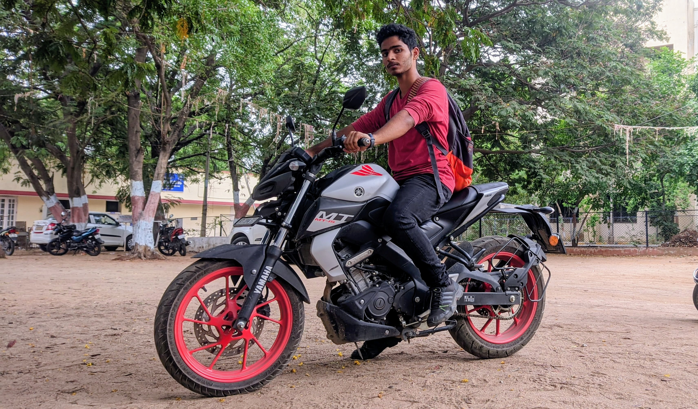
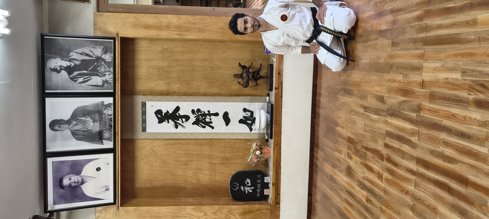

I'm an
Optimizer
My obsession sits at the intersection of efficiency and intelligence. I'm not satisfied with just using AI — I want to understand it, strip it down, retrain it, and make it do more with less. Small models, big ideas.
- Training Tiny Language Models (TLMs) from scratch
- Building AI Agents & Multi-Agent systems
- Fine-tuning for smarter function calling
- Pushing cost, latency & accuracy to their limits
- Running everything locally — no cloud dependency
# My daily driver
class TinyLM:
def __init__(self):
self.params = "<1B"
self.goal = "max intel"
def optimize(self, model):
latency = minimize(model.inf)
accuracy = maximize(model.eval)
return balance(latency, accuracy)
I Don't Just
Research
If I find myself doing something tedious more than once, I automate it. If a tool doesn't exist the way I need it, I build it. Here's what's been keeping me up at night lately.
AI Assistant TOC
I built this because I was tired of losing my place in long AI conversations. It adds a smart Table of Contents, resizable pane, and quick navigation to ChatGPT, Gemini & Perplexity.
Browser ExtensionTiny LM Training Pipeline
My main research project — an end-to-end pipeline for training small language models entirely from scratch. I'm pushing them toward smarter function calling and agentic reasoning.
AI ResearchDojo Manager
I run a karate dojo and needed a way to manage it. So I built one — a website and Android app for member tracking, grading schedules, and attendance. Vibe-coded and battle-tested.
Full StackA Few Things About Me
- 😄 I use Grok more than Gemini, ChatGPT, or Claude — yes, really
- 🐧 I distro hop every 4 months — currently juggling macOS, Windows, Fedora, and $distro_of_the_quarter
- 🏠 I'm rewiring my home and making every cable completely invisible

Ride
Free
When my head is too full of model weights and training loss curves, I get on the bike. I'm still working out a stubborn tight gearbox — but two wheels and an open road fix almost everything.
🏍️ MotorcyclesLearning
the Flute
I picked up the flute because I wanted to understand music the way I understand code — from the fundamentals up. Still figuring it out. Breath into frequency, imperfect and beautiful.
🎵 Music
Hard &
Soft
I hold a 2nd Dan Black Belt in Okinawa Goju Ryu Karate under TOGKF. Karate taught me the same thing good engineering does — power means nothing without precision and control.